6．椭圆函数
在这个世纪前半叶，可与复函数论基本定理的发展相提并论的，有椭圆函数及以后的阿贝尔函数的特殊发展。毫无疑问，高斯得到了椭圆函数论中的许多关键性的结果，因为其中许多是在他死以后，在一些他从未发表过的论文中找到的。不过，公认的椭圆函数论的创始人是阿贝尔和雅可比。
阿贝尔（1802—1829）是一个穷牧师的儿子。作为在挪威奥斯陆学习的一个学生，他有幸以霍尔姆伯（Berndt Michael Holmböe，1795—1850）作为老师。后者看出阿贝尔的天才，并预言阿贝尔17岁时将成为世界上最大的数学家。在奥斯陆和哥本哈根学习完以后，阿贝尔得到了一笔奖学金，使他能够出外旅行。在巴黎他被介绍给勒让德、拉普拉斯、柯西及拉克鲁瓦，但他们无视他，用完了钱以后，他到柏林去和克雷尔一起度过了1825年至1827年。他自己写道，当他回到奥斯陆时极度疲竭，以致他需依靠在一所教堂的门上。为了钱，他给年轻学生教课。通过他发表的工作，他开始引起人们的注意，克雷尔曾想，他也许可以为阿贝尔在柏林大学谋一个教授的位置。但阿贝尔生了肺病，并于1829年去世。
阿贝尔知道欧拉、拉格朗日、勒让德在椭圆积分方面的工作，他从事于这一工作也许是从高斯所作的评论，特别是他的《算术研究》（Disquisitiones Arithmeticae）中的陈述得到启发的。他自己从1825年起开始写论文，他把他关于积分的重要论文于1826年10月30日送到巴黎科学院，以便能在它的杂志上发表。这篇论文是《关于很广一类超越函数的一个一般性质》（Mémoire sur une propriété générale d'une classe très-étendue de fonctions transcendantes），包含了阿贝尔大定理（第7节）。当时科学院的秘书傅里叶（Joseph Fourier）读了论文的引言，然后委托勒让德和柯西对论文做出评价，后者是主要负责人。这篇论文很长并且很难，这只是因为它包含了许多新的概念。柯西把它放在一旁，醉心于自己的工作。勒让德把它忘了。阿贝尔去世以后，当他已经有了名望时，科学院寻找这篇论文，找到之后于1841年发表(29)。阿贝尔在《克雷尔杂志》和热尔岗的《年报》上发表了其他关于方程论和椭圆函数的论文。这些论文从1827年起开始刊出。因为阿贝尔1826年的主要论文到1841年才发表，所以其他的一些作者，读了这段时期内发表的限制较多的定理，独立地得到了许多阿贝尔1826年的结果。
另一个椭圆函数的发现者是雅可比（1804—1851）。和阿贝尔不一样，他过着安静的生活。他出生于波茨坦（Potsdam）的一个犹太人家庭，在柏林大学学习，到1827年成为哥尼斯堡（Königsberg）的一个教授。1842年，由于健康不良，他放弃了他的职位。普鲁士政府给了他退休金，退隐到柏林，于1851年去世。他在世的时候声誉就很高，他的学生把他的思想散播到各个地方。
雅可比讲授椭圆函数多年。他对这一课题的探讨成为函数论本身发展所遵循的模式。他还研究了函数行列式（雅可比行列式）、常微分方程和偏微分方程、动力学、天体力学、流体动力学、超椭圆积分和超椭圆函数。雅可比常被认为是一个纯粹数学家，但是，像他那个世纪和前一些世纪中的几乎所有的数学家一样，他最认真地研究自然界。
当阿贝尔研究椭圆函数的时候，雅可比（他也已经读过勒让德关于椭圆积分的工作）在1827年开始研究椭圆函数。他送了一篇没有证明的论文给《天文报告》（Astronomische Nachrichten）(30)。差不多在同一时间，阿贝尔独立地发表了他的《关于椭圆函数的研究》（Recherches sur les fonctions elliptiques）(31)。两个人都达到了从椭圆积分的反函数着手研究这一关键性想法，这个想法阿贝尔从1823年就已经有了。雅可比后来给出了他在1827年发表的结果的证明，发表在1828年至1830年的《克雷尔杂志》的几篇文章中。此后两个人都发表了关于椭圆函数的论文；不过阿贝尔在1829年就去世，而雅可比活到1851年，因而能够发表多得多的东西。特别地，雅可比1829年的《椭圆函数基本新理论》（Fundamenta Nova Theoriae Functionum Ellipticarum）(32)成了椭圆函数的一本关键性的著作。
通过雅可比的来信，勒让德熟悉了雅可比和阿贝尔的工作。1828年2月9日他在给雅可比的信中说：“我很满意地看到两个年轻数学家如此成功地开辟了分析的一个分支，它很久以来是我喜爱的领域，但在我自己的国家中它却没有受到应有的重视。”后来勒让德发表了他的《椭圆函数专著》（Traité des fonctions elliptiques，二卷，1825—1826）的三个补篇，其中他叙述了雅可比和阿贝尔的工作。
一般椭圆积分牵涉到
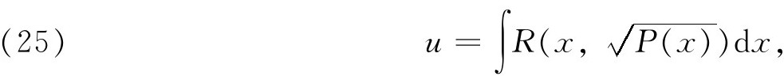
其中P（x）是一个具有不同根的三次或四次多项式，R（x，y）是x和y的一个有理函数。企图推断x的函数u的一般性质的努力失败了，这是因为对于欧拉和勒让德来说，积分的意义本身是受到限制的。P（x）的系数是实的，x的取值范围是实的，并且不包含P（x）＝0的根。有了复函数理论的更多知识，研究x的函数u就有可能前进一步，但这个见解没有获得效果。结果证明，阿贝尔和雅可比的想法较好。
具体地说，勒让德引进了（第19章第4节）椭圆积分F（k，ø），E（k，ø）及π（n，k，ø）。1826年左右，阿贝尔注意到，如果［例如考虑F（k，ø）］研究
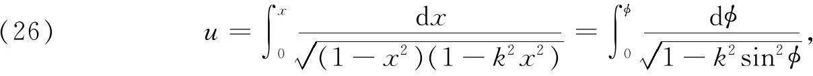
其中x＝sinø，那么会遇到像研究
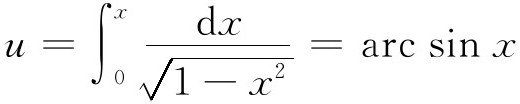
时出现的同样的困难。较好的关系来自把x作为u的函数来研究。因此阿贝尔建议在椭圆积分情形中，把x作为u的函数来研究。由于x＝sinø，所以ø也可作为u的函数。
雅可比引进了(33)记号
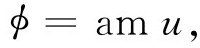
表示（26）定义的u的函数ø。他还引进了
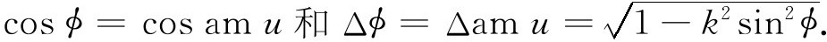
这个记号被古德曼简化为
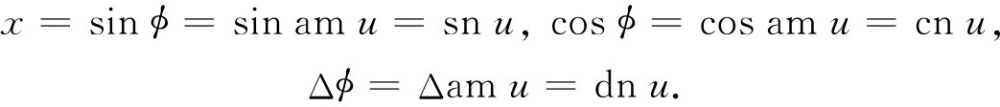
我们立刻有
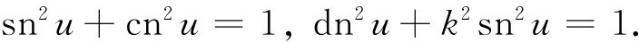
如果ø换为-ø，则u变号。故有
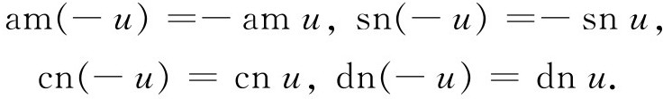
由下式定义的量K起着三角函数中π的作用，
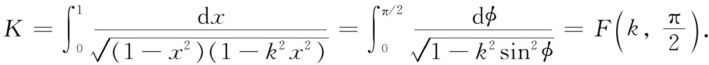
与K联系着的是超越量K′，它作为k′的函数相同于K作为k的函数，其中k′由k2＋k′2＝1定义，0＜k＜1。
关于K及K′，重要的是（在这里不证明）
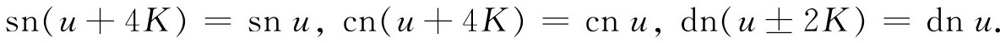
所以4K是椭圆函数sn u和cn u的周期，而2K是dn u的周期。
到此为止，函数sn u，cn u和dn u都只对实的x和u定义。阿贝尔已有了把每一个函数看作是一个元素的想法，因为每一个函数只是对实值有定义。他的下一个想法便是引进u的复值，在总体上来定义椭圆函数。关于复函数的知识，阿贝尔在他访问巴黎时就熟悉了柯西的工作。事实上，他曾研究了变数和指数都取复值的二项式定理。首先推广到纯虚值是利用所谓雅可比的虚变换来完成的。阿贝尔引进了
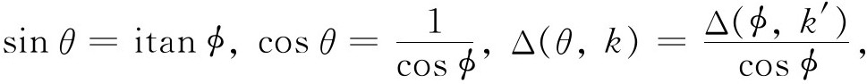
其中θ＝am iu，从而有
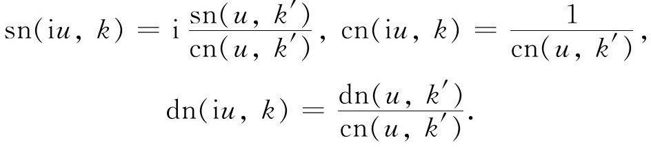
阿贝尔除了允许他的变量取纯虚值以外，还建立了椭圆函数的加法定理。在
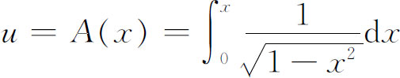
的情形，我们知道这个积分是多值函数A（x）＝arc sin x，并且有
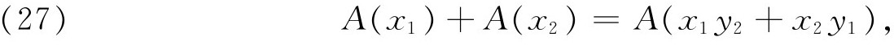
其中y1和y2是相应的余弦值；即
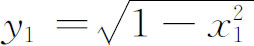
。但在这种情形下引进单值的反函数x＝sin u就可以得到很大的简化，替代（27），我们有熟知的正弦函数加法定理。现在在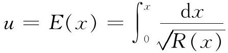
的情形［其中y2＝R（x）是一个四次多项式］，欧拉曾经得到加法定理（第19章第4节）
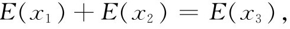
其中x3是x1，x2，y1，y2的一个已知的有理函数，并且
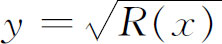
。阿贝尔认为对反函数x＝ø（u），也许有一个简单的加法定理，而这一点被证明是对的。这个结果也出现在他的1827年的论文中。于是对于实的u及v有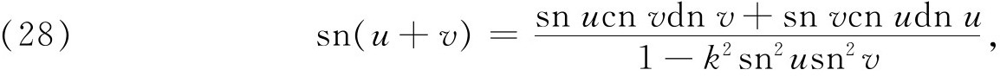
对于cn（u＋v）及dn（u＋v）亦有类似的公式。这些就是椭圆函数的加法定理，是椭圆积分加法定理的类似物。
对于自变量的实值和虚值定义了椭圆函数以后，阿贝尔借助于加法定理，便将定义推广到复值。因为，若z＝u＋iv，则由加法定理，snz＝sn（u＋iv）就有了意义，分别用u和iv的sn，cn和dn表示出。
随之还有
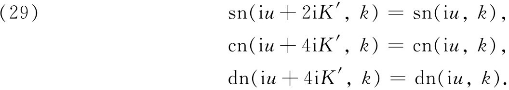
所以，sn z的周期（不是唯一的）是4K及2iK′；cn z的周期是4K及2K＋2iK′；dn z的周期是2K及4iK′。关于周期，重要的一点是存在两个周期（它们的比不是实数），因而这些椭圆函数是双周期的。这是阿贝尔的伟大发现之一。这些函数是单值的，所以只须在复平面的一个平行四边形中（图27.5）研究它们，因为它们在每一个全等的平行四边形中重复它们的性质。椭圆函数除去是单值的双周期的以外，只有一个本性奇点，在∞处。事实上可以用这些性质定义椭圆函数。在每一个周期平行四边形中，它们的确有极点。
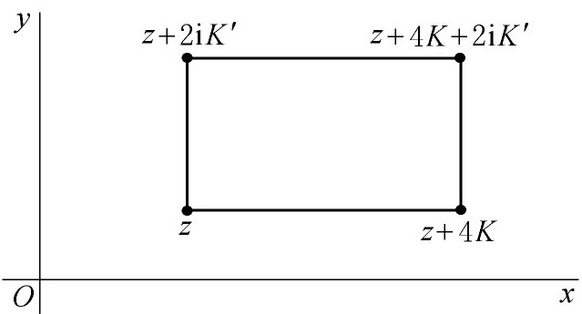
图27.5
阿贝尔引进了椭圆积分的反演（勒让德忽略了这一点，而这被证明是探索椭圆积分的关键），尽管他是从勒让德那里取得可能是他一生工作的精华的，但勒让德称赞阿贝尔说：“这个年轻的挪威人的智力是多高啊。”埃尔米特（Charles Hermite）说阿贝尔留下了一些思想，可供数学家们工作150年。
阿贝尔所得到的结果中，有许多被雅可比独立地得到了，前面已指出过，他在这方面的第一篇论文，出现在1827年。雅可比知道他在《新基本》（Fundamenta Nova）中所用的基本方法是不令人满意的，并且部分地在这本书中的某些地方和他在以后的演讲中，采用了不同的起点。他的演讲从未全部发表，但通过他的学生们的信件和笔记，这些演讲的实质内容相当全面地被知晓了。在他的新的探讨中，他把他的椭圆函数理论建立在被称为θ函数这一辅助函数的基础上，它是用
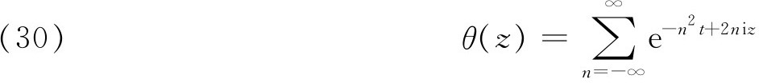
为例来说明的，其中z及t是复数，且Re（t）＞0。这个级数在z平面的任何有界区域内都绝对一致收敛。雅可比引进了四个θ函数，然后利用这些函数来表示出sn u，cn u和dn u。θ函数是可以构造出椭圆函数的最简单的元素。他还得到θ函数的各种无穷级数和无穷乘积的表达式。对于阿贝尔工作中想法的进一步研究将雅可比引导到研究θ函数与数论之间的关系。这个联系随后由埃尔米特、克罗内克以及其他人继续进行。θ函数的多种不同形式之间的关系的研究是19世纪数学家的一个较重要的活动。它是常见的贯穿在数学中的许多流行一时的风尚之一。
在1835年的一篇重要论文(34)中，雅可比证明了单变量的一个单值函数，如果对于自变量的每一个有穷值具有有理函数的特性（即为一亚纯函数），它就不可能有多于两个的周期，而周期的比必须是一个非实数。这个发现开辟了一个新的研究方向，即找出所有的双周期函数的问题。就在1844年(35)，刘维尔在给法国科学院的一封信中，说明如何从雅可比的定理出发建立双周期椭圆函数的一个完整的理论。这个理论是椭圆函数方面的一个较重要的贡献。在双周期性中刘维尔发现了椭圆函数的一个实质性质及其理论的一个统一观点，虽然双周期函数是比雅可比称之为椭圆函数更广的一类函数，但双周期函数的确具有椭圆函数的所有的基本性质。
魏尔斯特拉斯于1860年左右开始研究椭圆函数，他从古德曼那里学习了雅可比的工作，并从阿贝尔的论文里学习了阿贝尔的工作。这些论文给他的印象如此之深，以至于后来经常督促他的学生们读阿贝尔的著作。这时，为了他的教员证明书，他研究了古德曼给他指定的一个问题，即把椭圆函数表示成为幂级数的商。他做到了这一点。作为一个教授，在他的讲演中他经常重新做出他的椭圆函数理论。
勒让德曾将椭圆积分简化成含有一个四次多项式的平方根的三个标准形式。魏尔斯特拉斯得到含有一个三次多项式的平方根的三个不同形式(36)，即
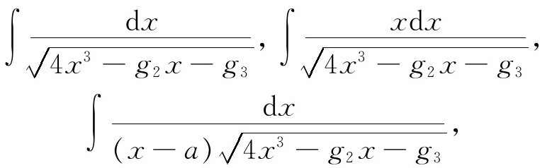
他把“反演”第一个积分所得的椭圆函数作为基本的椭圆函数。就是，如果
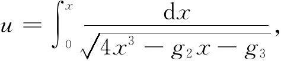
那么u的椭圆函数x就是魏尔斯特拉斯的
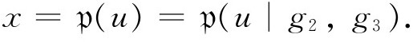
为了使
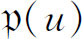
不退化为一个指数函数或三角函数，必须有判别式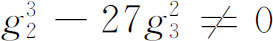
，换句话说，x的三次多项式的三个根应该是不相等的。魏尔斯特拉斯的双周期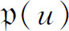
起着雅可比理论中sn u的作用并且提供了最简单的双周期函数。他证明了每一个椭圆函数可以借助于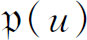
和他的导数很简单地表示出来。在魏尔斯特拉斯的探讨中，椭圆函数的“三角学”比较简单，但雅可比的函数和勒让德的椭圆积分对于数值计算比较好。魏尔斯特拉斯实际上是从他的
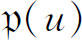
的一个元素出发，即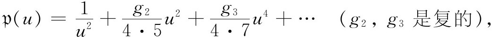
这个元素是他利用解以上积分给出的关于dx/du的微分方程得到的。然后，类似于阿贝尔的方式，利用关于
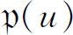
的加法定理得出整个函数。魏尔斯特拉斯的工作完备了、改写了并且美化了椭圆函数的理论。虽然我们将不进入特殊细节的讨论，但在我们离开椭圆函数这个课题以前，不能不提一下埃尔米特（1822—1901）的工作，他是巴黎大学理学院和多科工艺学校的教授。他从学生时代起就经常研究椭圆函数。他在1892年写道：“我不能离开椭圆领域。山羊被系在那里，就必须在那里吃青草。”他创作了理论本身中的基本结果，并研究了与数论的联系。他应用了椭圆函数解五次多项式方程，并处理了包含这种函数的力学问题。他也由于对e的超越性的证明和他引进的埃尔米特多项式而闻名于世。